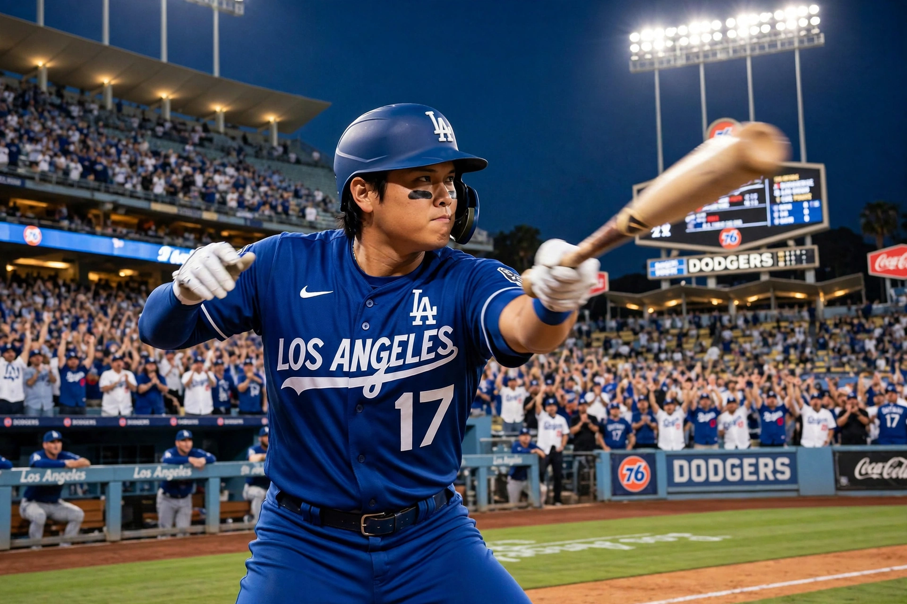

From Wikipedia, the free encyclopedia
| Shohei Ohtani | |
|---|---|
 Shohei Ohtani in a Los Angeles Dodgers uniform mid-swing during a game | |
| Born | 5 July 1994, Ōshū, Iwate, Japan |
| Positions | Designated hitter / pitcher |
| Teams | Hokkaido Nippon-Ham Fighters (2013–2017); Los Angeles Angels (2018–2023); Los Angeles Dodgers (2024–present) |
| Awards | AL MVP 2021, 2023; NL MVP 2024 (all unanimous) |
Shohei Ohtani (born 1994) is a Japanese professional baseball player for the Los Angeles Dodgers of Major League Baseball, celebrated as the finest two-way player since Babe Ruth — starring simultaneously as an elite power hitter and a frontline starting pitcher. After five seasons with the Hokkaido Nippon-Ham Fighters in Japan, he joined the Los Angeles Angels in 2018 and won the American League Rookie of the Year award. His 2021 season, hitting 46 home runs while posting a 3.18 ERA as a pitcher, is widely considered one of the greatest individual seasons in the sport's history and earned him the first of his MVP awards.
In December 2023 Ohtani signed a ten-year, $700 million contract with the Dodgers, then the largest in professional sports history, with most of the money deferred. Playing 2024 purely as a hitter while recovering from elbow surgery, he founded the "50–50 club" by hitting 54 home runs and stealing 59 bases, won the National League MVP unanimously, and helped the Dodgers beat the New York Yankees in the World Series. He starred for Japan in the 2023 World Baseball Classic, striking out his then-Angels teammate Mike Trout to clinch the final against the United States. Ohtani's fame in Japan is unparalleled among active athletes, and his two-way feats have transformed global interest in baseball.
Categories: Shohei Ohtani | Los Angeles Dodgers players | Japanese baseball players | World Baseball Classic players